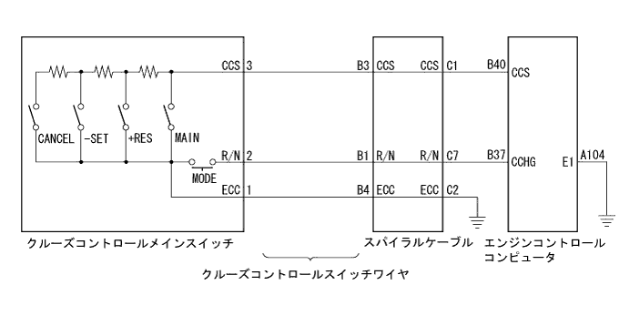
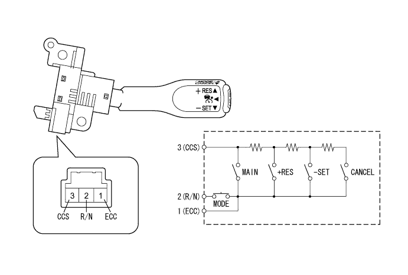
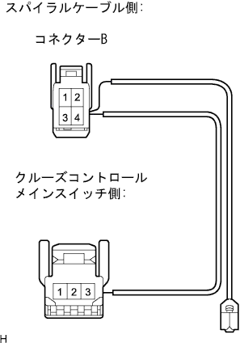
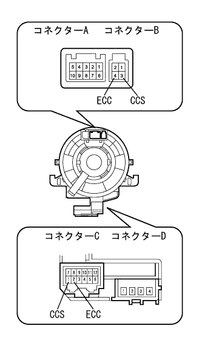
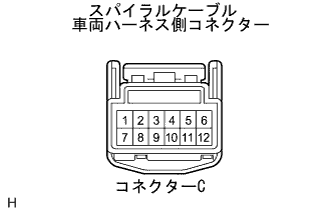
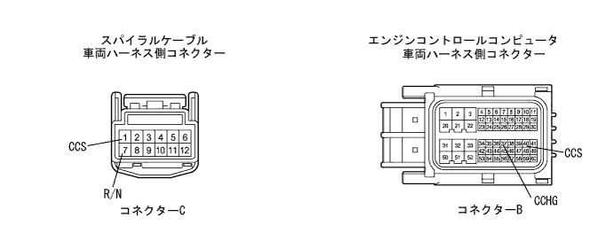

Radar Cruise Control System Cruise Control Switch Circuit |

)| Step 1 | Read TaSCAN Data (C/C CANCEL, C/C SET/COAST SW, C/C RES/ACC SW) |
Using SST (TaSCAN), follow the prompts on the screen to display the "ECU Data Monitor" screen and check the computer data.
| Item Name [Symbol] | Item Description/Display Range | Standard Value | Remarks |
|---|---|---|---|
| C/C CANCEL [CNCL] | Displays input signal when CANCEL switch is operated Display range: OFF/ON | Cruise CANCEL switch ON: ON |
|
| C/C SET/COAST [SECO] | Displays input signal when -SET switch is operated Display range: OFF/ON | -SET switch ON: ON |
|
| C/C RES/ACC [REAC] | Displays input signal when +RES switch is operated Display range: OFF/ON | +RES switch ON: ON |
|
|
| ||||
| OK | ||
| ||
| Step 2 | Inspect Cruise Control Main Switch |
Disconnect the cruise control main switch connector.

Using SST (Toyota electrical tester), measure the resistance between the terminals of the cruise control main switch assembly connector while operating the cruise control main switch assembly.
| Tester Connection (Terminal Symbol) | Condition | Standard |
|---|---|---|
| 3(CCS) - 1(ECC) | MAIN switch ON | Below 2.5 Ω |
| 3(CCS) - 1(ECC) | MAIN switch OFF | 10 kΩ or higher |
| 2(R/N) - 1(ECC) | MODE switch ON | Below 2.5 Ω |
| 2(R/N) - 1(ECC) | MODE switch OFF | 10 kΩ or higher |
| 3 (CCS) - 1 (ECC) | +RES switch ON | 216 to 264 Ω |
| 3 (CCS) - 1 (ECC) | -SET switch ON | 567 to 693 Ω |
| 3 (CCS) - 1 (ECC) | CANCEL switch ON | 1386 to 1674 Ω |
|
| ||||
| OK | |
| Step 3 | Inspect Cruise Control Switch Wire |
Disconnect the cruise control switch wire connector.
 |
Using SST (Toyota electrical tester), measure the resistance between the terminals of the cruise control switch wire connector.
| Tester Connection (Terminal Symbol) | Condition | Standard |
|---|---|---|
| 2 - B1 | Always | Below 2.5 Ω |
| 3 - B3 | Always | Below 2.5 Ω |
| 1 - B4 | Always | Below 2.5 Ω |
| Tester Connection (Terminal Symbol) | Condition | Standard |
|---|---|---|
| 1 - Body ground | Always | 10 kΩ or higher |
| 3 - Body ground | Always | 10 kΩ or higher |
| 4 - Body ground | Always | 10 kΩ or higher |
|
| ||||
| OK | |
| Step 4 | Inspect Spiral Cable Sub-assembly |
Center the spiral cable. (see)
 |
Using SST (Toyota electrical tester), inspect the resistance between the terminals of the spiral cable under the following conditions.
After centering the spiral cable, perform the inspection at the position turned 2.5 turns clockwise and at the position turned 2.5 turns counterclockwise.
Set the spiral cable at the position turned 2.5 turns clockwise from the center position, and perform the inspection while turning it 5.0 turns counterclockwise.
| Tester Connection (Terminal Symbol) | Condition | Standard |
|---|---|---|
| B3(CCS) - C1(CCS) | Always | Below 1 Ω |
| B4(ECC) - C2(ECC) | Always | Below 1 Ω |
| Tester Connection (Terminal Symbol) | Condition | Standard |
|---|---|---|
| B3 (CCS) - Body ground | Always | 10 kΩ or higher |
| B4 (ECC) - Body ground | Always | 10 kΩ or higher |
|
| ||||
| OK | |
| Step 5 | Inspect Wire Harness and Connector (Spiral Cable - Body Ground) |
for reference.Make sure that the spiral cable connector is disconnected.
 |
Using SST (Toyota electrical tester), measure the resistance between the terminals of the vehicle side wire harness connector of the spiral cable.
| Tester Connection (Terminal Symbol) | Condition | Standard |
|---|---|---|
| C2 (ECC) - Body ground | Always | Below 1 Ω |
|
| ||||
| OK | |
| Step 6 | Inspect Wire Harness and Connector (Spiral Cable - Engine Control Computer) |
for reference.Disconnect connector B of the engine control computer.
Make sure that the spiral cable connector is disconnected.
Using SST (Toyota electrical tester), measure the resistance between the connector terminals of the vehicle wire harness. (For Terminals of ECU, see)

| Tester Connection (Terminal Symbol) | Condition | Standard |
|---|---|---|
| C1(CCS) - B40(CCS) | Always | Below 1 Ω |
| C7(R/N) - B37(CCHG) | Always | Below 1 Ω |
| Tester Connection (Terminal Symbol) | Condition | Standard |
|---|---|---|
| C1 (CCS) - Body ground | Always | 10 kΩ or higher |
| C7 (R/N) - Body ground | Always | 10 kΩ or higher |
|
| ||||
| OK | ||
| ||